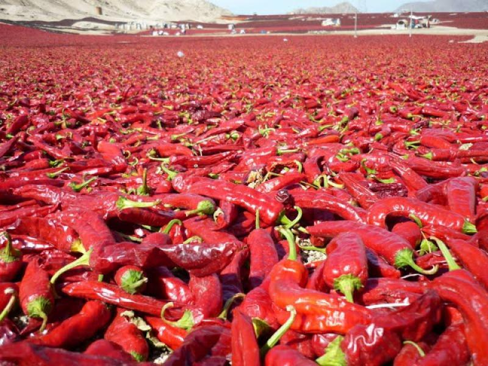
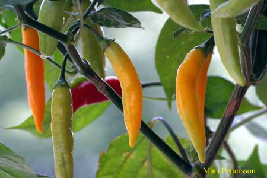
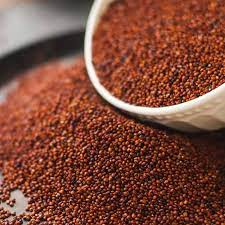
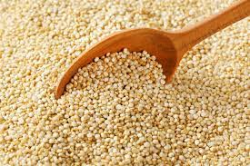
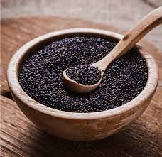
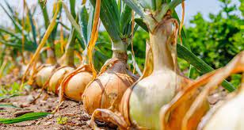
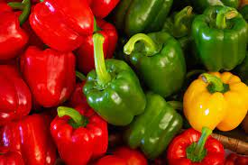
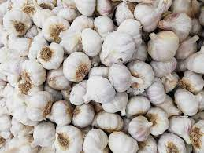

PAPRIKA
Dried paprika, also known as dried chili, is a product used to create a diversity of the best spices that we can find on the world. Having a lot of uses, it can be processed to whatever our importer may be looking for. Also, it can be used in the pharmacy industry and cosmetic industry.
Green paprika: Being similiar to dried paprika, it's use is mainly for preserves to be sold to the public.



QUINOA
RED, WHITE AND BLACK
This is a native peruvian plant and a very powerful source of food. The nutritional value is strong and can be also used in other applications. It can be consumed whole grain, raw or toasted flour, grits, flakes or instant powder. It can also be used for medicine and other industrial uses like for animal feeding. It also has a lot of varieties, which we offer the red, white and black variety.

BROWN ONION
A widely used vegetable for cooking, as a spice and also has medical uses. It has a stronger flavour than the other varieties, which gives it a large variety of uses in the cuisine thanks to it's stronger flavour.

BELL PEPPER
Peppers are presented in a diversity of colors and varieties. We offer to you the red and yellow versions of this wonderful fruit. When cooking them, they can be very versatile, we can consume them straight, preserved, fried, cooked and in many other ways.
